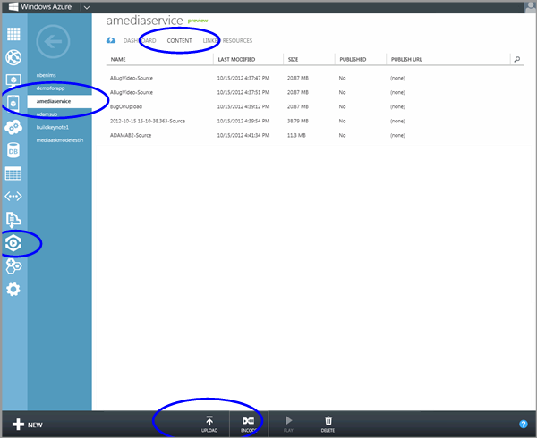
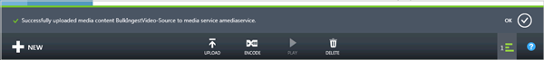

Click the Content view at the top of the page. Your view should look similar to the screen shot below.

Click the Upload button at the bottom of the portal.
In the Upload Content dialog, click Browse Your Computer and browse to the desired asset file. Click the file and then click Open or press Enter.

In the Upload Content dialog, click the check button to accept the File and Content Name.
The upload will start and you can track progress from the bottom of the portal.

StatusComplete" />
Once the upload has completed, you will see the new asset listed in the Content list. By convention the name will have "-Source" appended at the end to help track new content as source content for encoding tasks.